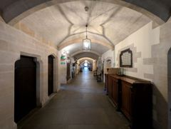
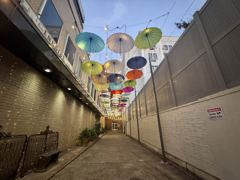
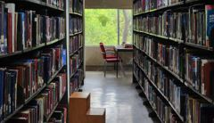
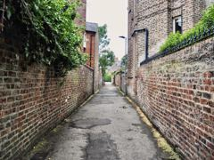
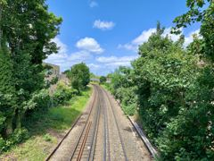

A browser experiment
Turn your screen into a window.
Drop in a photo and turn on your webcam. As you move your head, the scene shifts as if it were really there, just behind the glass.
Your photo and camera feed never leave your computer. No server, no sign-up.

How it works
- 01
Depth from a photo
A neural network running in your browser estimates how far away every point in the photo is, and turns the picture into a 3D surface.
- 02
Where are your eyes?
The webcam tracks your face and irises. Since the iris is almost the same size in everyone, your distance from the screen can be measured in centimetres.
- 03
Screen = glass
Every frame is redrawn for your exact eye position. The screen edge acts like a window frame, hiding parts of the scene and revealing others as you move.
Start with a sample

Vaulted corridor
Umbrella alley
Library
Brick alley
RailwayFor the strongest effect: go full screen, turn on the camera, close one eye and slowly slide your head sideways. Photos with clear depth work best: corridors, streets, a room seen through a doorway. Chrome or Edge recommended; the depth model downloads once on first use.